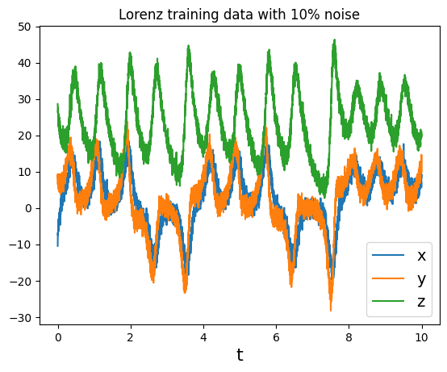
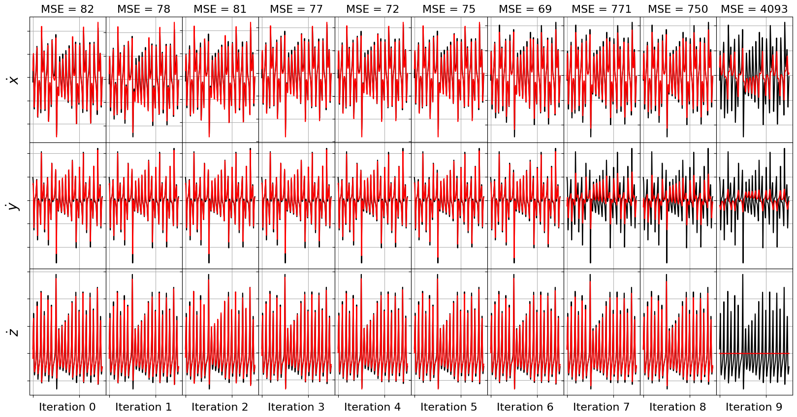
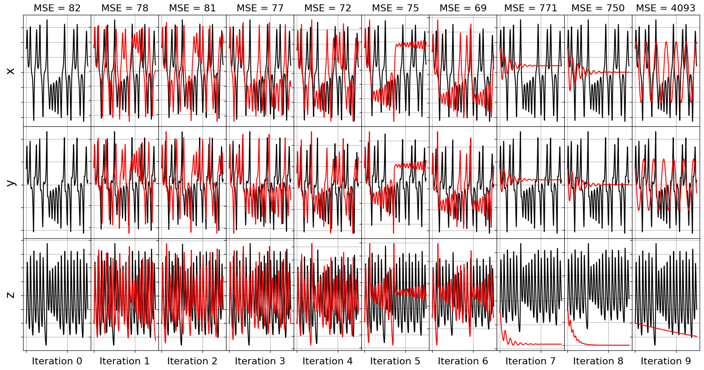
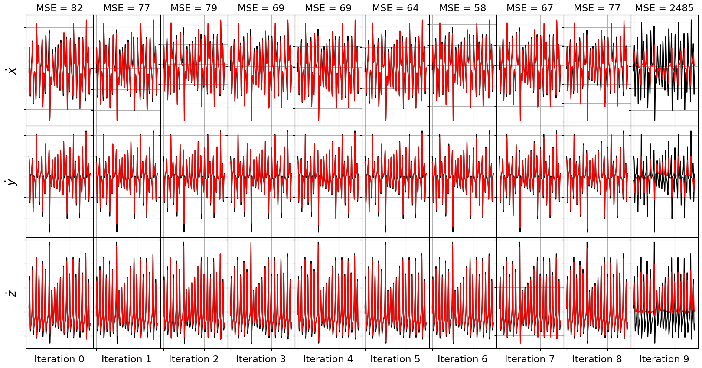
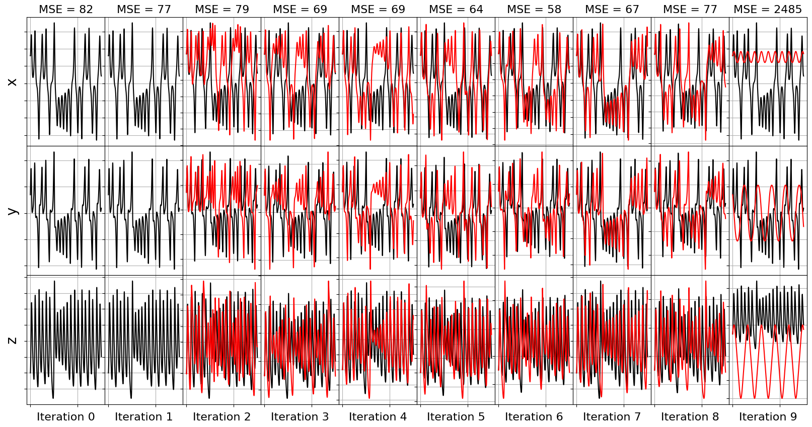
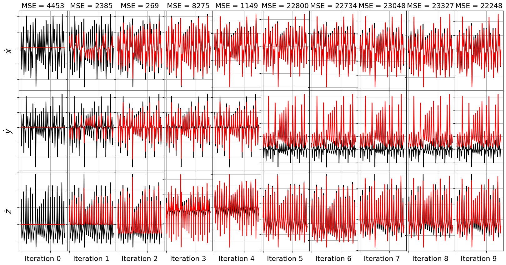
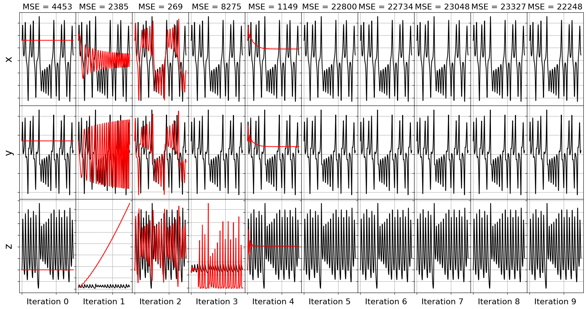
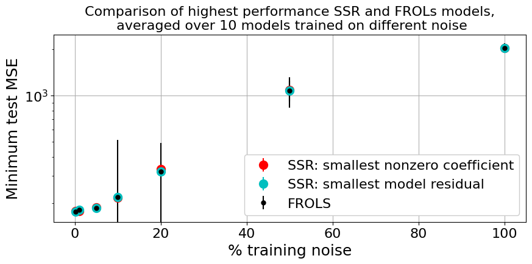

SSR and FROLs (the greedy algorithms!) examples
There are many algorithms to solve the SINDy regression problem. SSR and FROLs are two popular greedy algorithms. Greedy algorithms iteratively truncate model coefficients, and search for the best model, based on some metric for success. These models work well in practice, but may have weak local convergence and may lack other algorithm guarantees.
SSR algorithm based on Boninsegna, L., Nüske, F., & Clementi, C. (2018). Sparse learning of stochastic dynamical equations. The Journal of chemical physics, 148(24), 241723 and FROLS algorithm based on Billings, S. A. (2013). Nonlinear system identification: NARMAX methods in the time, frequency, and spatio-temporal domains. John Wiley & Sons. Jupyter notebook written by Alan Kaptanoglu and Jared Callaham.
An interactive version of this notebook is available on binder 
Stepwise sparse regression (SSR) solves the problem by iteratively truncating the smallest coefficient during the optimization. There are many ways one can decide to truncate terms. We implement two popular ways: (1) truncating the smallest coefficient at each iteration; (2) chopping each coefficient, computing N - 1 models, and then choosing the model with the lowest residual error.
[1]:
import matplotlib.pyplot as plt
import numpy as np
from scipy.integrate import solve_ivp
from sklearn.metrics import mean_squared_error
import pysindy as ps
from pysindy.utils import lorenz
# Ignore odeint warnings when model is unstable
import warnings
from scipy.integrate.odepack import ODEintWarning
warnings.filterwarnings("ignore", category=ODEintWarning)
# Seed the random number generators for reproducibility
np.random.seed(100)
# integration keywords for solve_ivp, typically needed for chaotic systems
integrator_keywords = {}
integrator_keywords['rtol'] = 1e-12
integrator_keywords['method'] = 'LSODA'
integrator_keywords['atol'] = 1e-12
/tmp/ipykernel_214415/2095191201.py:11: DeprecationWarning: Please import `ODEintWarning` from the `scipy.integrate` namespace; the `scipy.integrate.odepack` namespace is deprecated and will be removed in SciPy 2.0.0.
from scipy.integrate.odepack import ODEintWarning
[2]:
# Generate some training data with added gaussian noise
dt = .002
t_train = np.arange(0, 10, dt)
t_train_span = (t_train[0], t_train[-1])
x0_train = [-8, 8, 27]
x_train = solve_ivp(lorenz, t_train_span, x0_train,
t_eval=t_train, **integrator_keywords).y.T
rmse = mean_squared_error(x_train, np.zeros((x_train).shape), squared=False)
x_train = x_train + np.random.normal(0, rmse / 10.0, x_train.shape)
feature_names = ['x', 'y', 'z']
ssr_optimizer = ps.SSR()
model = ps.SINDy(optimizer=ssr_optimizer)
model.fit(x_train, t=dt)
for i in range(3):
plt.plot(t_train, x_train[:, i], label=feature_names[i])
plt.xlabel('t', fontsize=16)
plt.legend(fontsize=14)
plt.title('Lorenz training data with 10% noise')
plt.show()

Define some functions for plotting performance as the greedy algorithms progress
[3]:
import matplotlib.gridspec as gridspec
def plot_x_dot_fits(x_test, optimizer, dt, n_models):
plt.figure(figsize=(20, 10))
gs = gridspec.GridSpec(3, n_models)
gs.update(wspace=0.0, hspace=0.0) # set the spacing between axes.
for j in range(n_models):
optimizer.coef_ = np.asarray(optimizer.history_)[j, :, :]
# Predict derivatives using the learned model
x_dot_test_predicted = model.predict(x_test)
# Compute derivatives with a finite difference method, for comparison
x_dot_test_computed = model.differentiate(x_test, t=dt)
for i in range(3):
plt.subplot(gs[i, j])
plt.plot(t_test, x_dot_test_computed[:, i],
'k', label='numerical derivative')
plt.plot(t_test, x_dot_test_predicted[:, i],
'r', label='model prediction')
if j == 0:
plt.ylabel('$\dot ' + feature_names[i] + r'$', fontsize=20)
if i == 0:
plt.title('MSE = %.0f' % model.score(x_test,
t=dt,
metric=mean_squared_error),
fontsize=16)
plt.xlabel('Iteration ' + str(j), fontsize=16)
plt.xticks(fontsize=18)
plt.yticks(fontsize=18)
ax = plt.gca()
ax.set_xticklabels([])
ax.set_yticklabels([])
plt.grid(True)
model.print()
print('Model ' + str(j) + ', MSE: %f' % model.score(x_test,
t=dt,
metric=mean_squared_error))
ax.set_yticklabels([])
plt.show()
def plot_x_fits(x_test, t_test, optimizer, n_models):
plt.figure(figsize=(20, 10))
gs = gridspec.GridSpec(3, n_models)
gs.update(wspace=0.0, hspace=0.0)
for j in range(n_models):
optimizer.coef_ = np.asarray(optimizer.history_)[j, :, :]
# Simulate dynamic system with the identified model
# Some of these models may diverge, so need to use odeint
# (which just gives a warning)
# rather than the default solve_ivp, which crashes with an error.
x_test_sim = model.simulate(x_test[0, :], t_test, integrator='odeint')
for i in range(3):
plt.subplot(gs[i, j])
plt.plot(t_test, x_test[:, i], 'k', label='test trajectory')
if np.max(np.abs(x_test_sim[:, i])) < 1000: # check for instability
plt.plot(t_test, x_test_sim[:, i], 'r', label='model prediction')
if j == 0:
plt.ylabel(feature_names[i], fontsize=20)
if i == 0:
plt.title('MSE = %.0f' % model.score(x_test,
t=dt,
metric=mean_squared_error),
fontsize=16)
plt.xlabel('Iteration ' + str(j), fontsize=16)
plt.xticks(fontsize=18)
plt.yticks(fontsize=18)
ax = plt.gca()
ax.set_xticklabels([])
ax.set_yticklabels([])
plt.grid(True)
print('Model ' + str(j) + ', MSE: %f' % model.score(x_test,
t=dt,
metric=mean_squared_error))
ax.set_yticklabels([])
plt.show()
Note that the usage is a bit different because we save all the sparse models and we choose our favorite one afterwards. Below we show that we can track the MSE between the predicted and true derivative on a testing trajectory as the algorithm iterates, and then choose the model with the minimum MSE.
[4]:
# Evolve the Lorenz equations in time using a different initial condition
t_test = np.arange(0, 15, dt)
t_test_span = (t_test[0], t_test[-1])
x0_test = np.array([8, 7, 15])
x_test = solve_ivp(lorenz, t_test_span, x0_test,
t_eval=t_test, **integrator_keywords).y.T
n_models = 10
plot_x_dot_fits(x_test, ssr_optimizer, dt, n_models)
(x0)' = -38.454 1 + 1.105 x0 + 2.041 x1 + 3.923 x2 + 0.441 x0^2 + -0.510 x0 x1 + -0.299 x0 x2 + 0.159 x1^2 + 0.219 x1 x2 + -0.104 x2^2
(x1)' = 23.198 1 + 17.268 x0 + 4.459 x1 + -2.349 x2 + -0.134 x0^2 + 0.100 x0 x1 + -0.719 x0 x2 + -0.024 x1^2 + -0.122 x1 x2 + 0.061 x2^2
(x2)' = 32.497 1 + -7.769 x0 + 5.604 x1 + -6.817 x2 + -0.573 x0^2 + 1.200 x0 x1 + 0.244 x0 x2 + 0.068 x1^2 + -0.186 x1 x2 + 0.135 x2^2
Model 0, MSE: 82.118696
(x0)' = 2.708 1 + 1.392 x0 + 2.503 x1 + -0.428 x2 + 0.233 x0^2 + -0.366 x0 x1 + -0.299 x0 x2 + 0.153 x1^2 + 0.199 x1 x2
(x1)' = 22.863 1 + 17.347 x0 + 4.447 x1 + -2.349 x2 + -0.115 x0^2 + 0.056 x0 x1 + -0.720 x0 x2 + -0.123 x1 x2 + 0.061 x2^2
(x2)' = 33.403 1 + -7.996 x0 + 5.639 x1 + -6.811 x2 + -0.628 x0^2 + 1.325 x0 x1 + 0.247 x0 x2 + -0.183 x1 x2 + 0.136 x2^2
Model 1, MSE: 78.209209
(x0)' = 4.075 1 + 0.872 x0 + 2.575 x1 + -0.343 x2 + 0.113 x0^2 + -0.086 x0 x1 + -0.293 x0 x2 + 0.205 x1 x2
(x1)' = 19.651 1 + 17.230 x0 + 4.455 x1 + -1.868 x2 + -0.040 x0^2 + -0.718 x0 x2 + -0.122 x1 x2 + 0.046 x2^2
(x2)' = -20.190 1 + -8.398 x0 + 5.041 x1 + -1.135 x2 + -0.363 x0^2 + 1.152 x0 x1 + 0.247 x0 x2 + -0.157 x1 x2
Model 2, MSE: 81.155077
(x0)' = -2.000 1 + 1.041 x0 + 2.406 x1 + -0.022 x2 + 0.008 x0^2 + -0.298 x0 x2 + 0.209 x1 x2
(x1)' = 17.772 1 + 17.060 x0 + 4.510 x1 + -1.672 x2 + -0.714 x0 x2 + -0.123 x1 x2 + 0.038 x2^2
(x2)' = -21.480 1 + -3.549 x0 + 0.789 x1 + -1.099 x2 + -0.380 x0^2 + 1.161 x0 x1 + 0.086 x0 x2
Model 3, MSE: 77.400572
(x0)' = -2.457 1 + 1.076 x0 + 2.382 x1 + 0.018 x2 + -0.299 x0 x2 + 0.210 x1 x2
(x1)' = -1.264 1 + 17.110 x0 + 4.206 x1 + 0.150 x2 + -0.718 x0 x2 + -0.112 x1 x2
(x2)' = -22.172 1 + -0.313 x0 + 0.113 x1 + -1.083 x2 + -0.384 x0^2 + 1.162 x0 x1
Model 4, MSE: 71.723637
(x0)' = -2.044 1 + 1.085 x0 + 2.377 x1 + -0.299 x0 x2 + 0.210 x1 x2
(x1)' = -1.498 1 + 20.570 x0 + 1.169 x1 + 0.131 x2 + -0.833 x0 x2
(x2)' = -22.198 1 + -0.205 x0 + -1.079 x2 + -0.386 x0^2 + 1.164 x0 x1
Model 5, MSE: 74.970460
(x0)' = -0.763 1 + -5.369 x0 + 8.046 x1 + -0.085 x0 x2
(x1)' = 1.514 1 + 20.601 x0 + 1.161 x1 + -0.833 x0 x2
(x2)' = -21.960 1 + -1.113 x2 + -0.382 x0^2 + 1.161 x0 x1
Model 6, MSE: 68.516681
(x0)' = -0.270 1 + -8.549 x0 + 8.709 x1
(x1)' = 6.349 1 + -10.567 x0 + 7.660 x1
(x2)' = 0.189 1 + -2.430 x2 + 0.909 x0 x1
Model 7, MSE: 771.465636
(x0)' = -8.557 x0 + 8.706 x1
(x1)' = -10.375 x0 + 7.733 x1
(x2)' = -2.423 x2 + 0.909 x0 x1
Model 8, MSE: 750.484221
(x0)' = 2.326 x1
(x1)' = -2.862 x0
(x2)' = -0.026 x2
Model 9, MSE: 4092.533695

[5]:
# Repeat plots but now integrate the ODE and compare the test trajectories
plot_x_fits(x_test, t_test, ssr_optimizer, n_models)
Model 0, MSE: 82.118696
Model 1, MSE: 78.209209
Model 2, MSE: 81.155077
Model 3, MSE: 77.400572
Model 4, MSE: 71.723637
Model 5, MSE: 74.970460
Model 6, MSE: 68.516681
Model 7, MSE: 771.465636
Model 8, MSE: 750.484221
Model 9, MSE: 4092.533695

Note that some of the frames do not have any red lines… that means the model for this iteration resulted in an unstable model when it was integrated forward. This often happens with nonsparse models!
Repeat the SSR fitting with the lowest model residual method
[6]:
ssr_optimizer2 = ps.SSR(criteria="model_residual")
model = ps.SINDy(optimizer=ssr_optimizer2)
model.fit(x_train, t=dt)
[6]:
SINDy(differentiation_method=FiniteDifference(),
feature_library=PolynomialLibrary(), feature_names=['x0', 'x1', 'x2'],
optimizer=SSR(criteria='model_residual'))In a Jupyter environment, please rerun this cell to show the HTML representation or trust the notebook. On GitHub, the HTML representation is unable to render, please try loading this page with nbviewer.org.
SINDy(differentiation_method=FiniteDifference(),
feature_library=PolynomialLibrary(), feature_names=['x0', 'x1', 'x2'],
optimizer=SSR(criteria='model_residual'))PolynomialLibrary()
PolynomialLibrary()
SSR(criteria='model_residual')
SSR(criteria='model_residual')
[7]:
plot_x_dot_fits(x_test, ssr_optimizer2, dt, n_models)
(x0)' = -38.454 1 + 1.105 x0 + 2.041 x1 + 3.923 x2 + 0.441 x0^2 + -0.510 x0 x1 + -0.299 x0 x2 + 0.159 x1^2 + 0.219 x1 x2 + -0.104 x2^2
(x1)' = 23.198 1 + 17.268 x0 + 4.459 x1 + -2.349 x2 + -0.134 x0^2 + 0.100 x0 x1 + -0.719 x0 x2 + -0.024 x1^2 + -0.122 x1 x2 + 0.061 x2^2
(x2)' = 32.497 1 + -7.769 x0 + 5.604 x1 + -6.817 x2 + -0.573 x0^2 + 1.200 x0 x1 + 0.244 x0 x2 + 0.068 x1^2 + -0.186 x1 x2 + 0.135 x2^2
Model 0, MSE: 82.118696
(x0)' = -38.406 1 + 2.692 x1 + 3.944 x2 + 0.442 x0^2 + -0.505 x0 x1 + -0.267 x0 x2 + 0.156 x1^2 + 0.200 x1 x2 + -0.105 x2^2
(x1)' = 22.863 1 + 17.347 x0 + 4.447 x1 + -2.349 x2 + -0.115 x0^2 + 0.056 x0 x1 + -0.720 x0 x2 + -0.123 x1 x2 + 0.061 x2^2
(x2)' = 33.403 1 + -7.996 x0 + 5.639 x1 + -6.811 x2 + -0.628 x0^2 + 1.325 x0 x1 + 0.247 x0 x2 + -0.183 x1 x2 + 0.136 x2^2
Model 1, MSE: 76.632609
(x0)' = -36.278 1 + 2.463 x1 + 3.942 x2 + 0.315 x0^2 + -0.217 x0 x1 + -0.277 x0 x2 + 0.215 x1 x2 + -0.103 x2^2
(x1)' = 19.651 1 + 17.230 x0 + 4.455 x1 + -1.868 x2 + -0.040 x0^2 + -0.718 x0 x2 + -0.122 x1 x2 + 0.046 x2^2
(x2)' = -8.013 x0 + 5.244 x1 + -3.784 x2 + -0.560 x0^2 + 1.281 x0 x1 + 0.241 x0 x2 + -0.168 x1 x2 + 0.073 x2^2
Model 2, MSE: 79.031733
(x0)' = 2.903 x1 + 0.654 x2 + 0.241 x0^2 + -0.169 x0 x1 + -0.270 x0 x2 + 0.197 x1 x2 + -0.034 x2^2
(x1)' = 17.772 1 + 17.060 x0 + 4.510 x1 + -1.672 x2 + -0.714 x0 x2 + -0.123 x1 x2 + 0.038 x2^2
(x2)' = -2.856 x0 + 0.713 x1 + -3.799 x2 + -0.567 x0^2 + 1.283 x0 x1 + 0.071 x0 x2 + 0.072 x2^2
Model 3, MSE: 69.127604
(x0)' = 3.066 x1 + 0.150 x0^2 + -0.103 x0 x1 + -0.269 x0 x2 + 0.192 x1 x2 + -0.009 x2^2
(x1)' = 17.128 x0 + 4.268 x1 + -0.152 x2 + -0.718 x0 x2 + -0.114 x1 x2 + 0.009 x2^2
(x2)' = -1.272 x0 + -3.821 x2 + -0.580 x0^2 + 1.291 x0 x1 + 0.041 x0 x2 + 0.073 x2^2
Model 4, MSE: 69.096209
(x0)' = 3.026 x1 + 0.046 x0^2 + -0.055 x0 x1 + -0.269 x0 x2 + 0.190 x1 x2
(x1)' = 17.052 x0 + 4.264 x1 + -0.716 x0 x2 + -0.114 x1 x2 + 0.004 x2^2
(x2)' = -0.052 x0 + -3.890 x2 + -0.585 x0^2 + 1.294 x0 x1 + 0.076 x2^2
Model 5, MSE: 63.600464
(x0)' = 3.008 x1 + -0.016 x0 x1 + -0.268 x0 x2 + 0.191 x1 x2
(x1)' = 17.634 x0 + 3.943 x1 + -0.731 x0 x2 + -0.103 x1 x2
(x2)' = -3.903 x2 + -0.586 x0^2 + 1.294 x0 x1 + 0.076 x2^2
Model 6, MSE: 57.569520
(x0)' = 2.980 x1 + -0.269 x0 x2 + 0.191 x1 x2
(x1)' = 20.747 x0 + 1.157 x1 + -0.835 x0 x2
(x2)' = -2.117 x2 + -0.241 x0^2 + 1.067 x0 x1
Model 7, MSE: 66.738381
(x0)' = -0.289 x0 x2 + 0.318 x1 x2
(x1)' = 23.304 x0 + -0.884 x0 x2
(x2)' = -2.423 x2 + 0.909 x0 x1
Model 8, MSE: 77.045027
(x0)' = 0.066 x1 x2
(x1)' = -0.153 x0 x2
(x2)' = 0.538 x0 x1
Model 9, MSE: 2484.769705

[8]:
plot_x_fits(x_test, t_test, ssr_optimizer2, n_models)
Model 0, MSE: 82.118696
Model 1, MSE: 76.632609
Model 2, MSE: 79.031733
Model 3, MSE: 69.127604
Model 4, MSE: 69.096209
Model 5, MSE: 63.600464
Model 6, MSE: 57.569520
Model 7, MSE: 66.738381
Model 8, MSE: 77.045027
Model 9, MSE: 2484.769705

FROLS greedy algorithm
Forward Regression Orthogonal Least Squares (FROLS) solves the least-squares regression problem with \(L_0\) norm by iteratively selecting the most correlated function in the library. At each step, the candidate functions are orthogonalized with respect to the already-selected functions. The selection criteria is the Error Reduction Ratio, i.e. the normalized increase in the explained output variance due to the addition of a given function to the basis. ### Note that (at least our implementation) performs poorly on noise, generating more unstable models than SSR. FROLs is also different from FROLs because it starts with no coefficients and then at each iteration adds a new nonzero coefficient.
[9]:
frols_optimizer = ps.FROLS()
model = ps.SINDy(optimizer=frols_optimizer)
model.fit(x_train, t=dt)
[9]:
SINDy(differentiation_method=FiniteDifference(),
feature_library=PolynomialLibrary(), feature_names=['x0', 'x1', 'x2'],
optimizer=FROLS())In a Jupyter environment, please rerun this cell to show the HTML representation or trust the notebook. On GitHub, the HTML representation is unable to render, please try loading this page with nbviewer.org.
SINDy(differentiation_method=FiniteDifference(),
feature_library=PolynomialLibrary(), feature_names=['x0', 'x1', 'x2'],
optimizer=FROLS())PolynomialLibrary()
PolynomialLibrary()
FROLS()
FROLS()
[10]:
plot_x_dot_fits(x_test, frols_optimizer, dt, n_models)
(x0)' = 0.000
(x1)' = 0.000
(x2)' = 0.000
Model 0, MSE: 4453.379811
(x0)' = 2.215 x1
(x1)' = -0.146 x0 x2
(x2)' = 0.388 x1^2
Model 1, MSE: 2384.566975
(x0)' = -7.872 x0 + 7.805 x1
(x1)' = 22.193 x0 + -0.809 x0 x2
(x2)' = -50.920 1 + 0.596 x1^2
Model 2, MSE: 268.880514
(x0)' = 1.218 x0 + 6.237 x1 + -0.258 x0 x2
(x1)' = 16.269 x0 + 2.815 x1 + -0.705 x0 x2
(x2)' = -29.291 1 + -5.402 x0 x1 + 4.176 x1^2
Model 3, MSE: 8274.713196
(x0)' = 0.099 x0 + 0.223 x1 + -0.297 x0 x2 + 0.322 x1 x2
(x1)' = 9.417 x0 + 10.364 x1 + -0.451 x0 x2 + -0.322 x1 x2
(x2)' = -2.251 1 + -2.414 x0^2 + 3.434 x0 x1 + -0.654 x1^2
Model 4, MSE: 1149.203212
(x0)' = -1.946 1 + 0.103 x0 + 0.222 x1 + -0.296 x0 x2 + 0.324 x1 x2
(x1)' = 1.219 x0 + 2.156 x1 + -0.528 x0 x2 + 0.022 x1 x2 + 0.316 x2^2
(x2)' = -0.665 1 + -1.707 x2 + -0.741 x0^2 + 1.526 x0 x1 + -0.081 x1^2
Model 5, MSE: 22799.993817
(x0)' = -0.009 1 + 0.104 x0 + 0.222 x1 + -0.035 x0 x1 + -0.295 x0 x2 + 0.324 x1 x2
(x1)' = 1.219 x0 + 2.156 x1 + -0.005 x0^2 + -0.528 x0 x2 + 0.022 x1 x2 + 0.317 x2^2
(x2)' = -0.307 1 + -2.890 x2 + -0.561 x0^2 + 1.217 x0 x1 + 0.046 x1^2 + 0.038 x2^2
Model 6, MSE: 22734.433754
(x0)' = -0.013 1 + 0.104 x0 + 0.224 x1 + 0.034 x0^2 + -0.070 x0 x1 + -0.295 x0 x2 + 0.325 x1 x2
(x1)' = 1.223 x0 + 2.163 x1 + -0.141 x2 + -0.006 x0^2 + -0.529 x0 x2 + 0.022 x1 x2 + 0.323 x2^2
(x2)' = -0.294 1 + -2.716 x2 + -0.688 x0^2 + 1.454 x0 x1 + -0.087 x0 x2 + -0.061 x1^2 + 0.046 x2^2
Model 7, MSE: 23048.431824
(x0)' = -0.023 1 + 0.111 x0 + 0.229 x1 + 0.075 x0^2 + -0.226 x0 x1 + -0.290 x0 x2 + 0.082 x1^2 + 0.322 x1 x2
(x1)' = 18.716 1 + 1.240 x0 + 2.193 x1 + -1.670 x2 + -0.011 x0^2 + -0.530 x0 x2 + 0.022 x1 x2 + 0.353 x2^2
(x2)' = -0.292 1 + -0.798 x0 + -2.699 x2 + -0.688 x0^2 + 1.453 x0 x1 + -0.060 x0 x2 + -0.060 x1^2 + 0.046 x2^2
Model 8, MSE: 23326.682231
(x0)' = -0.008 1 + 0.109 x0 + 0.231 x1 + 0.161 x0^2 + -0.255 x0 x1 + -0.291 x0 x2 + 0.098 x1^2 + 0.322 x1 x2 + -0.008 x2^2
(x1)' = 0.265 1 + 1.212 x0 + 2.147 x1 + 1.013 x2 + 0.415 x0^2 + -0.339 x0 x1 + -0.529 x0 x2 + 0.030 x1 x2 + 0.265 x2^2
(x2)' = -0.291 1 + -1.665 x0 + 0.403 x1 + -2.687 x2 + -0.685 x0^2 + 1.459 x0 x1 + -0.042 x0 x2 + -0.066 x1^2 + 0.045 x2^2
Model 9, MSE: 22248.241095

[11]:
plot_x_fits(x_test, t_test, frols_optimizer, n_models)
Model 0, MSE: 4453.379811
Model 1, MSE: 2384.566975
Model 2, MSE: 268.880514
Model 3, MSE: 8274.713196
Model 4, MSE: 1149.203212
Model 5, MSE: 22799.993817
Model 6, MSE: 22734.433754
Model 7, MSE: 23048.431824
Model 8, MSE: 23326.682231
Model 9, MSE: 22248.241095

Let’s compare all three methods as the noise steadily increases, cross-validated over 10 noise instantiations
[12]:
# generate training and testing data
dt = .1
t_train = np.arange(0, 10, dt)
t_train_span = (t_train[0], t_train[-1])
x0_train = [-8, 8, 27]
x_train = solve_ivp(lorenz, t_train_span, x0_train,
t_eval=t_train, **integrator_keywords).y.T
rmse = mean_squared_error(x_train, np.zeros((x_train).shape), squared=False)
t_test = np.arange(0, 15, dt)
t_test_span = (t_test[0], t_test[-1])
x0_test = np.array([8, 7, 15])
x_test = solve_ivp(lorenz, t_test_span, x0_test,
t_eval=t_test, **integrator_keywords).y.T
# Cross-validate over 10 discharges for each noise level
n_validation = 10
noise_levels = [rmse / 1000.0, rmse / 100.0, rmse / 20.0,
rmse / 10.0, rmse / 5.0, rmse / 2.0, rmse]
criterias = ["coefficient_value", "model_residual"]
final_MSE = np.zeros((3, len(noise_levels), n_validation))
for k, noise_level in enumerate(noise_levels):
for i in range(n_validation):
x_noisy = x_train + np.random.normal(0, noise_level, x_train.shape)
for kk in range(3):
if kk == 0:
optimizer = ps.SSR(criteria="coefficient_value")
if kk == 1:
optimizer = ps.SSR(criteria="model_residual")
if kk == 2:
optimizer = ps.FROLS()
model = ps.SINDy(optimizer=optimizer)
model.fit(x_noisy, t=dt)
MSE = np.zeros(np.shape(optimizer.history_)[0])
for j in range(np.shape(optimizer.history_)[0]):
optimizer.coef_ = np.asarray(optimizer.history_)[j, :, :]
MSE[j] = model.score(x_test, t=dt, metric=mean_squared_error)
final_MSE[kk, k, i] = np.min(MSE)
average_MSE_cross_validated = np.mean(final_MSE, axis=-1)
std_MSE_cross_validated = np.std(final_MSE, axis=-1)
# Plot average MSE results with error bars.
# Note we are not including a sparsity penalty in the error term.
plt.figure(figsize=(10, 4))
plt.errorbar(noise_levels / rmse * 100, average_MSE_cross_validated[0, :],
yerr=std_MSE_cross_validated[0, :], fmt='o', color='r', markersize=10,
label='SSR: smallest nonzero coefficient')
plt.errorbar(noise_levels / rmse * 100, average_MSE_cross_validated[1, :],
yerr=std_MSE_cross_validated[1, :], fmt='o', color='c', markersize=10,
label='SSR: smallest model residual')
plt.errorbar(noise_levels / rmse * 100, average_MSE_cross_validated[1, :],
yerr=std_MSE_cross_validated[2, :], fmt='o', color='k', markersize=5,
label='FROLS')
plt.yscale('log')
plt.legend(fontsize=16, loc='lower right', framealpha=1.0)
plt.xticks(fontsize=16)
plt.yticks(fontsize=16)
plt.grid(True)
ax = plt.gca()
plt.xlabel('% training noise', fontsize=18)
plt.ylabel('Minimum test MSE', fontsize=18)
plt.title('Comparison of highest performance SSR and FROLs models,\n '
'averaged over 10 models trained on different noise', fontsize=16)
[12]:
Text(0.5, 1.0, 'Comparison of highest performance SSR and FROLs models,\n averaged over 10 models trained on different noise')

Summary
To summarize the findings here, SSR seems to substantially outperform FROLs, at least on this noisy and chaotic data. The “best model” (as measured by the minimal MSE on a testing trajectory) for FROLs often competes with the SSR “best model”, but usually with much higher variance. Moreover, almost all the SSR models outperform the FROLs models at the same level of sparsity! So we strongly recommend that on noisy, chaotic data, one uses STLSQ or SSR. The advantage of using SSR is that no hyperparameters are necessarily needed, although one has to choose a favorite or best model at the end.